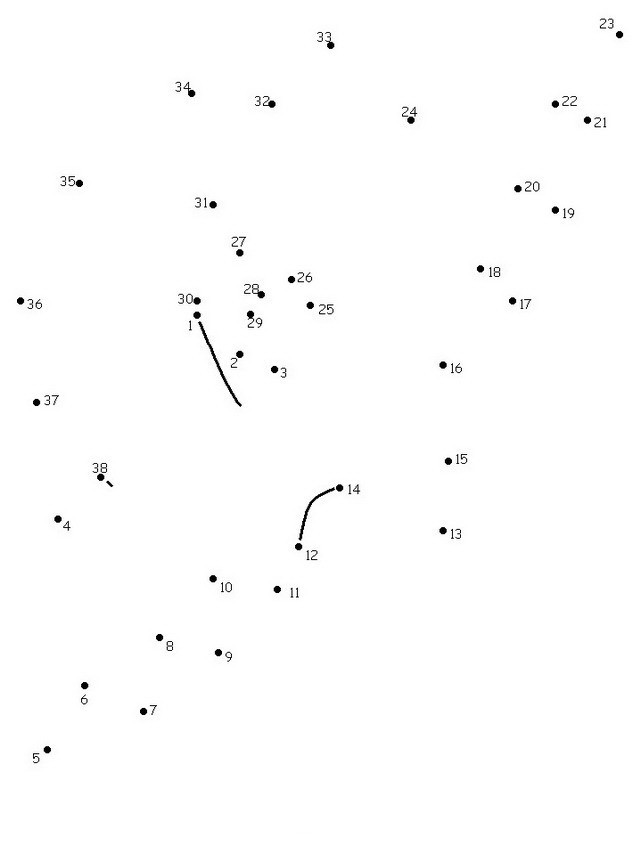

<div>
  <p>La risposta al gioco compare collegando i puntini! </br>
Potete decidere se ricopiarli su un foglio, ma il modo più veloce è fare click col tasto destro del mouse, </br>
salvarvi l'immagine sul computer e collegare i puntini con un programma come Paint. </br>
Se siete col telefono o tablet potete provare a fare uno screen e poi modificarlo...buon disegno!</p>
</div>
